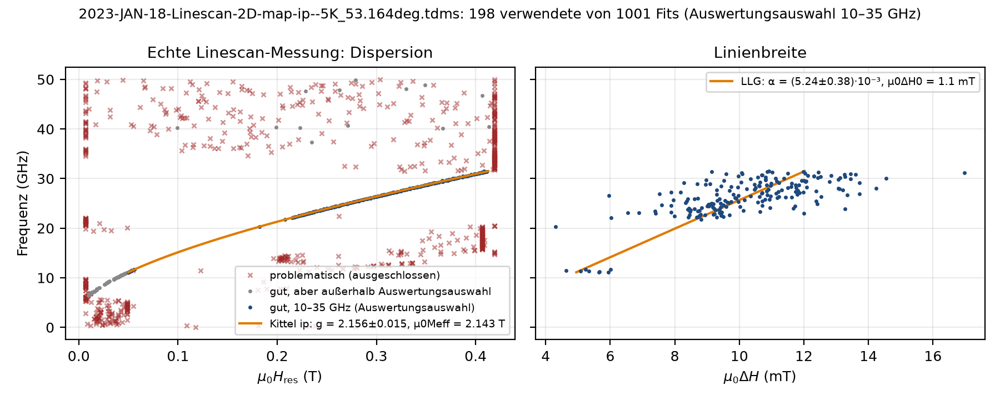

Ausreißer, Projektdateien, Einstellungen, Speichern¶
Ausreißer / ignorieren (Strg+M im Farbplot, Strg+I für den aktuellen Fit oder Klick im Kittel-Fenster Strg+K): Punkt aus Kittel/LLG, Plots und Globalparametern entfernt (grau, Status ignoriert); Einzelfit bleibt; Spalte ausreisser im Export; Panel Wieder aufnehmen; rückgängig per Strg+Z.

Projekt (Datei → Projekt speichern, JSON Formatversion 4): Quelle, Kanal-Zuordnung, Auswertungsauswahl, γ, Fenster je Frequenz, Zonen, Korridore (je Mode, mit Ergebnissen der Moden 2…n), Ausreißer, Bewertung je Fit, Platzhalter (nicht gefittet), Modenzahl, physikalische Parameter, Verarbeitungskette, programm. Laden = TDMS neu lesen + alle Fits deterministisch neu rechnen. Nie gespeichert: Zoom, Fensterlayout, Achsengeometrie (Ansicht → Fensterlayout zurücksetzen stellt den Auslieferungszustand her).
Auto-Sicherung: 15 s nach jeder Änderung und beim Beenden wird der Arbeitsstand als Projekt in das Konfigurationsverzeichnis geschrieben (Datei → Auto-Sicherung wiederherstellen).
Einstellungen (Datei → Einstellungen): physikalische Parameter, Verarbeitungskette, Anzeige (Farbskala, Zoom, Problemfits, …), Export-Spalten, Bereichsfit-Optionen → *.polderfit-einstellungen.json; Als Standard speichern legt sie im Konfigurationsverzeichnis ab (Windows %APPDATA%\PolderFit, Linux ~/.config/polderfit, macOS ~/Library/Application Support/PolderFit; Umgebungsvariable POLDERFIT_KONFIG) und lädt sie beim Start.
Speichern / Export (Datei → Speichern / Export): Alles speichern (Strg+Umschalt+S) schreibt gewählte Bestandteile mit gemeinsamem Basisnamen in einen Ordner – Projekt, Excel, CSV, Kittel/LLG (Excel + CSV + PNG/PDF), Farbplot-Bild, Farbplot-Matrix, TDMS, Einstellungen. Excel/CSV der Einzelfits enthalten alle Parameter in Spaltengruppen (Export-Spalten, als Voreinstellung speicherbar): Resonanzfeld und Linienbreite in T und mT, α, Amplitude/Phase/komplexe Amplitude, Untergrund, Gütemaße, Fenster, Status/Bewertung, Temperatur; je weiterer Mode ein Blatt Einzelfits_M;, Dezimalkomma).
speichere_sitzung(stapel, "sitzung.json", physik=p.als_dict(), verarbeitung=kette.als_dict(), korridore=korridore)
daten = lade_sitzung("sitzung.json")
ds = lade_tdms(daten["quelle"], zuordnung={r: tuple(p) for r, p in daten["zuordnung"].items()}, layout=daten["format_typ"])
stapel = stelle_stapel_wieder_her(daten, ds)
exportiere_excel(stapel.ergebnisse, "fits.xlsx", spalten=["kern", "status"], nur_gefittete=True)